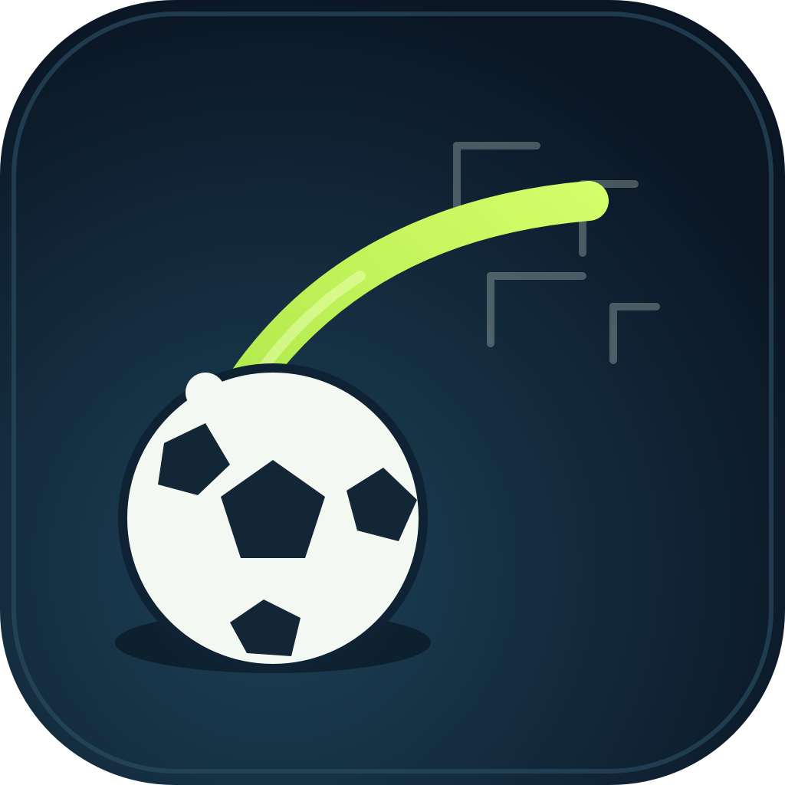

Şut UstasıShot Master — Destek / Support
Türkçe destek
Şut Ustası çevrimdışı bir serbest vuruş oyunudur. Sorularınız, hata bildirimleriniz ve önerileriniz için bize yazın:
E-posta: emn1249@gmail.com
Dil değiştirme
Ana ekranda Ayarlar → Dil yolundan Türkçe ve İngilizce arasında geçiş yapabilirsiniz.
İlerleme kayboldu
Yıldızlar ve açılan toplar yalnızca cihazda saklanır. Uygulamayı silmek ilerlemeyi sıfırlar; hesap ve bulut yedeği yoktur.
Top kilidi açılmadı
Ödüllü top kilitleri, videonun tamamı izlendiğinde açılır. Video yüklenemezse kilit açılmaz ve oyun normal şekilde devam eder; bir süre sonra tekrar deneyin.
Reklam görünmüyor
Reklamlar yalnızca güvenli geçişlerde (bölüm sonu, seçim ekranı) ve stok varsa gösterilir. İnternet yoksa oyun reklamsız çalışmaya devam eder.
Gizlilik
Hangi verilerin işlendiğini Gizlilik Politikası sayfasında bulabilirsiniz.
English support
Şut Ustası (Shot Master) is an offline free-kick game. Contact us for questions, bug reports and feedback:
Email: emn1249@gmail.com
Change language
Open Settings → Language on the home screen to switch between Turkish and English.
Progress reset
Stars and unlocked balls are stored on your device only. Deleting the app erases progress; there is no account or cloud backup.
Ball did not unlock
Rewarded unlocks require watching the full video. If the video fails to load the ball stays locked and gameplay continues normally — try again later.
No ads shown
Ads appear only at safe transitions (level end, selection screens) and only when inventory is available. Without internet the game keeps working, ad-free.
Privacy
See the Privacy Policy for what is processed.